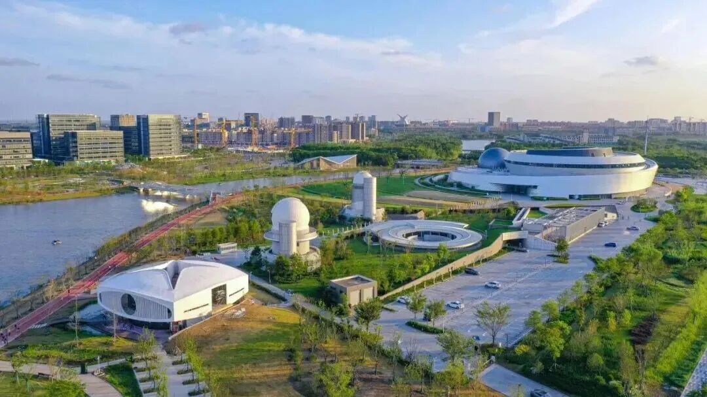
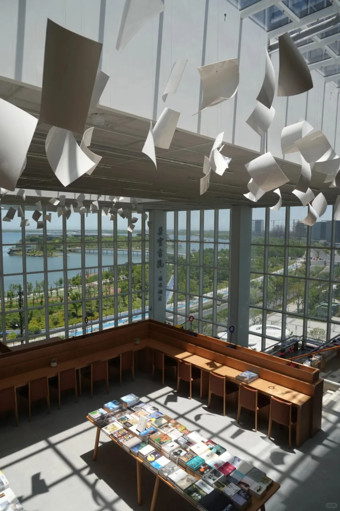

立冬刚过，滴水湖的早上有点冷。风从东海那边过来，带着咸味。但这个季节的光是真好——斜的，软的，从环湖林带里穿过来，把银杏照得透亮。
六点半到湖边，天刚亮不久。跑步的人三三两两，共享单车停在树底下，湖面平得像一块还没睡醒的玻璃。
十月底那波最好的秋色刚刚过去，但十一月的清晨，还能捡到一点尾巴。芦苇白了，水杉开始转锈红，人少，风清，是一年里最适合早起骑车的时候。

滴水湖畔的上海天文馆。图源：乐游上海
这里有一条在骑友圈传了很久的线，今年秋天又被“乐游上海”推了一轮。四十公里，导航轨迹是一支棒棒糖。
不用做太多攻略。顺时针，沿着湖走，路会自己把你带回去。
1
这支“棒棒糖”，到底是什么
形状很简单。环湖一圈是圆圆的糖身，沿海港大道往返上海海事大学的那一段，是长长的糖棍。两段接起来，正好四十公里。
推荐起点是滴水湖洲际酒店。从那里出发，顺时针，先走环湖一路。
为什么强调顺时针？因为湖在右手边。想停就停，想拍就拍，不用横穿马路去追风景。
这条路不算新，也不收门票。它更像临港人自己的后花园——住附近的人周末来刷一圈，跑马拉松的来拉练，带孩子的骑到一半就拐去公园。
2
早上七点，路上有什么
环湖一路这一段，树最密。
银杏黄了一半，水杉还带着锈红，樟树是深绿的底。太阳低，光从树缝里漏下来，路面一段亮、一段暗。骑进去，像穿过一条很长的时间隧道。
西岸这段建议慢一点。一尺花园、壹号码头都在这边，湖面开阔，早上几乎没人跟你抢机位。
再往前，转上海港大道，就是那根“糖棍”。路直，车少，风大。骑到上海海事大学门口折返，回到环湖二路。
环湖二路是我最喜欢的一段。星空之镜海绵公园的芦苇已经全白了，风一过，整片簌簌地响，声音比湖浪还清楚。
这一段也是整条线里最“不像上海”的地方。没有高楼，只有水、草、桥，和远处慢慢升起来的太阳。
环湖二路的湿地与步道。图源：乐游上海
再往后，中国航海博物馆、南汇新城城市公园、上海天文馆、临港少年宫，一个接一个。人文场馆和湖景交替出现，节奏不会闷。
3
骑累了，三个地方可以停
一尺花园（西岸店），环湖西一路858号。一千五百平方米的玻璃房，图书、绿植、咖啡混在一起，像浮在码头上的一朵云。骑到这儿，身子刚热开，坐下来喝一杯，再走不迟。
壹号码头，环湖西一路1号。半开放的空间，大台阶对着湖。天气好的时候，湖面蓝得有点像海。这里最适合发呆，不适合赶路。
朵云书院·滴水湖店，环湖西一路91号港城广场文化艺术中心5楼。五千平方米，二十米高的通天书架，七万册书沿着阶梯铺上去。巨大的落地窗外面，就是湖。
低头看书，抬头看湖。
不过要提醒一句：早上到得太早，书院还没开门。隔着玻璃看一眼，也算来过。真想进去，就把这一段留到回程。

朵云书院·滴水湖店的落地窗。图源：乐游上海
4
骑不动四十公里，也有办法
四十公里对很多人来说，还是太长了。那就把范围缩小到环湖景观带。
一圈八公里。滨湖步道、漫步道、跑步道，三条路贴着水走。沿湖还有七座桥，每座桥和它所在的港口同名同色，骑过去像穿过一道一道彩虹。
沿线有共享单车点位，体力不够随时可以还车。地铁16号线坐到滴水湖站，出站就能接上绿道。
如果只有一个早上，我的建议是：只骑西岸到南岸这一小段。四十分钟，够你看一场日出，再回去上班。
5
几句实在话
湖边风大，防风外套不要省。早上温度低，骑起来不冷，停下来就冷。
东港大道到观海公园那段有缓坡。晨露会让路面发滑，下坡捏着点刹，别冲。
早上补给点少，自己带瓶水。工作日人最少，周末七点以后，跑步的人就多起来了。
骑完回到洲际酒店，差不多八点半。太阳升高了，湖面从灰蓝变成亮蓝，城市也开始响起来。
湖北岸那片工地，是正在建的滴水湖运动中心一期。公示的总用地面积约6.7万平方米，差不多九个足球场。等它建好，这一圈的早上大概会更热闹。
所以，别等到周末中午。挑一个晴天，六点半出门。
你骑过滴水湖这一圈吗？或者，你心里那条“值得早起”的路线，在哪里？评论区聊聊。
参考：乐游上海《跟着这条40公里“棒棒糖”骑行线，在滴水湖体验专属秋色》、上观新闻《沿着亲水路线骑行，一览申城湖光秋色》、上海市规划和自然资源局滴水湖运动中心（一期工程）公示。